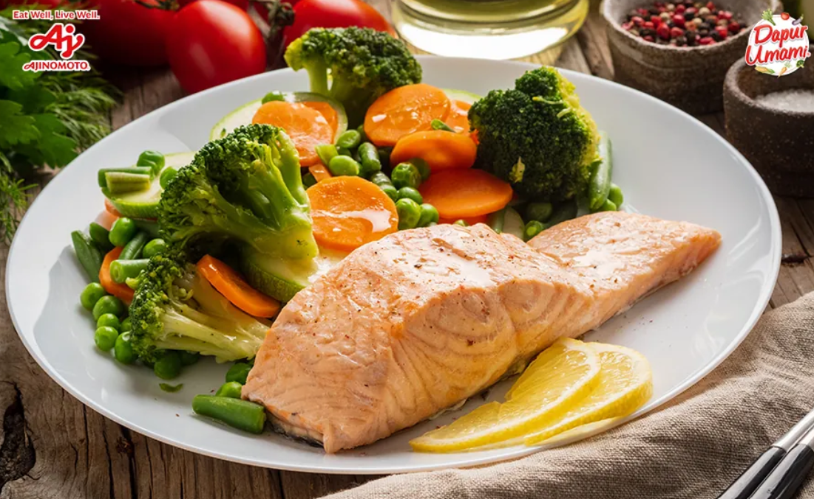
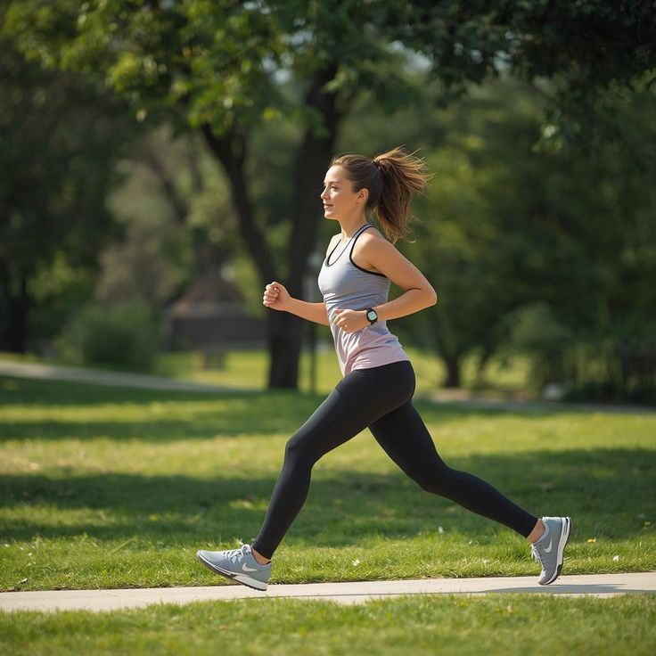
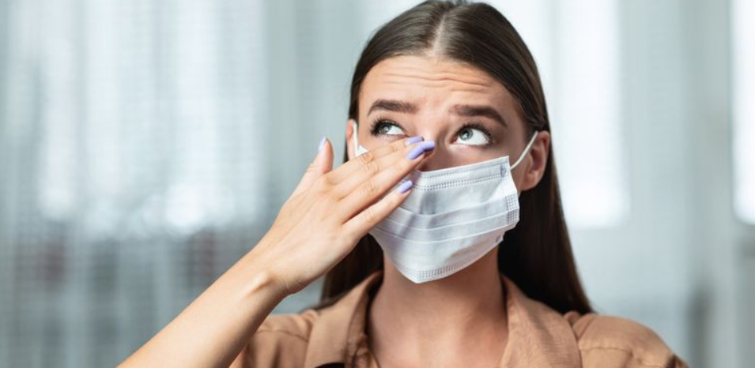

Mulai dari hal kecil, seperti dari piring makanmu, langkah kakimu, sampai pikiranmu: hidup sehat itu sederhana kalau dilakukan bersama-sama.
Ayo mulai hidup sehat-!SDG (Sustainable Development Goals) adalah 17 tujuan pembangunan berkelanjutan dari PBB. Tujuan ke-3 berbunyi: menjamin kehidupan yang sehat dan mendukung kesejahteraan semua orang di segala usia. Isinya dijabarkan dalam 13 target yang ditargetkan tercapai pada 2030. Ini beberapa yang paling dekat dengan kehidupan kita:
Menurunkan angka kematian ibu hingga di bawah 70 per 100.000 kelahiran hidup.
Mengakhiri kematian bayi baru lahir dan balita yang sebenarnya bisa dicegah.
Mengakhiri epidemi AIDS, TBC, dan malaria, serta melawan hepatitis dan penyakit bawaan air.
Mengurangi sepertiga kematian dini akibat PTM lewat pencegahan dan pengobatan, serta mendorong kesehatan mental. Paling dekat dengan kita.
Setiap orang bisa mengakses layanan kesehatan dasar yang bermutu dengan biaya terjangkau.
Mengurangi kematian dan penyakit akibat polusi udara, air, tanah, dan bahan kimia berbahaya.
Masih ada 7 target lain, antara lain narkoba dan alkohol (3.5), kecelakaan lalu lintas (3.6), dan kesehatan reproduksi (3.7). Sumber: PBB (sdgs.un.org/goals/goal3).
SDG 3 bertujuan menjamin kehidupan yang sehat dan meningkatkan kesejahteraan semua usia. Bagi generasi muda dan mahasiswa, kebiasaan kecil hari ini menentukan kesehatan di masa depan.

Hampir semua orang Indonesia (96,7%) belum makan sayur dan buah sesuai anjuran. Padahal gizi seimbang menopang energi belajar dan mencegah penyakit sejak muda.
Sumber: Survei Kesehatan Indonesia 2023, Kemenkes RI
37,4% penduduk Indonesia usia 10 tahun ke atas kurang bergerak, naik dari 26,1% pada 2013. Alasan terbanyaknya: merasa tidak ada waktu.
Sumber: Survei Kesehatan Indonesia 2023, Kemenkes RI1 dari 3 remaja Indonesia (34,9%) mengalami masalah kesehatan mental dalam setahun terakhir, tetapi hanya 2,6% yang mencari bantuan.
Sumber: I-NAMHS 2022 (remaja usia 10–17 tahun)
30,8% orang dewasa Indonesia mengalami hipertensi dan 11,7% penduduk usia 15+ mengidap diabetes. Keduanya bisa dicegah sejak muda lewat gaya hidup sehat.
Sumber: Survei Kesehatan Indonesia 2023, Kemenkes RISumber: Kemenkes RI & World Health Organization (WHO).